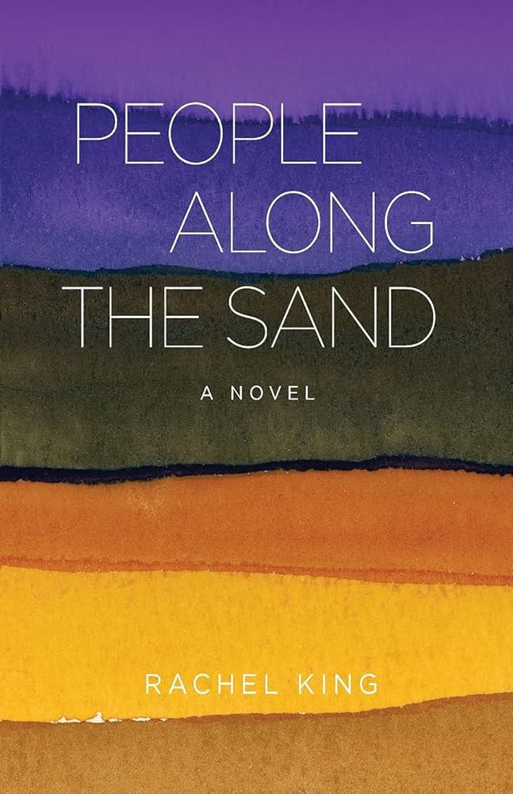

Rachel King, People Along the Sand (2021)
Synopsis
Rachel King’s People Along the Sand is a historical fiction novel set on the Oregon coast in 1967 during the debate surrounding the Oregon Beach Bill. This legislation argued for guaranteed public access to Oregon’s beaches. The story takes place in the fictional coastal town of Kalapuya and follows several interconnected people whose lives are being altered through this political change. The novel centers the Ryder family and their internal struggles. Husband and wife Jackson Ryder and Marilyn Ryder differ in their needs and expectations of the family, especially surrounding the possible profit that could be made from the passing of the Oregon Beach Bill. Their son, Tim, forms a friendship with an elderly lighthouse keeper who opposes the bill and fears the growing presence of tourists and outsiders. This novel, using multiple perspectives, looks at how individuals deal with environmental and social change. King explores themes of independence, identity, connection, and community through the realistic family she explores. This book focuses deeply on the complicated relationships that can arise between people, the land, and the community they hope to have.
Essay
In this novel, the setting plays so large a role it can be seen as its own character. King does an incredible job of bringing the salty air and tumultuous waves of the coast into conversation with the turning points in each of the characters’ lives. In this way, the coastal landscape mirrors the struggles of the characters as they contemplate the changes that are to come with the passing of the Beach Bill. Through the vast imagery of the coastal town of Kalapuya, readers feel as though they are reading the novel in a cabin on the Oregon Coast themselves. King chose the name for the town, Kalapuya, in honor of the Indigenous tribe who inhabited Oregon's Willamette Valley but were forcibly removed. The novel does a beautiful job of reflecting the isolation and economic struggles that still play a role in many of the small towns peppering the coast. By exploring debates over public beach access, King highlights longstanding Oregon values surrounding conservation, environmental stewardship, and public ownership of natural spaces. This novel preserves not only an important moment in Oregon history but also examines how political decisions affect ordinary people and local communities.
As much as the novel centers the environment, it in tandem does a great job looking at the dynamics of life in the late 1960s. The characters are at a pivotal moment in Oregon history as the bill awaits passage while grappling with family dynamics, the Vietnam War, and debates over freedom and independence for those who lack it. In the character of Marilyn Ryder, we see a growing political awareness while she searches for independence, reflecting the changing gender expectations during the period in an interesting way. This entire novel immerses the reader in an environment of rapid change, not only by political means but oftentimes social ones.
As readers follow the five characters, they are able to see a story unfold that centers a need for community in a way that's uniquely situated in the past. Being set in the 60s, the novel looks at how human connection and conflict can emerge in a time before social media and widespread technology, making the story of these characters in their environment feel all the more personal and intimate.
Author Bio
Rachel King is an Oregon-based writer of two poetry collections, a short story collection, and her debut novel People Along the Sand. She earned her MFA in Creative Writing from the University of Oregon and has worked as a journalist and editor for several publications. Her writing frequently explores the relationship between people and place, particularly within coastal and rural Oregon communities. King has stated that her work is inspired by both her own experiences visiting the coast during her childhood summers and by her grandfathers who worked in the logging industry.
Further Reading
Paul A Hanneman, Oregon's Beach and Bottle Bills: The Inside Story (2016)
- Written by former State representative, looks at the how Oregon's Beach and Bottle bills came to pass
Simone St. James, The Book of Cold Cases (2022)
- Mystery/thriller novel that takes place in a mansion on the cliffs of Oregon's coast
